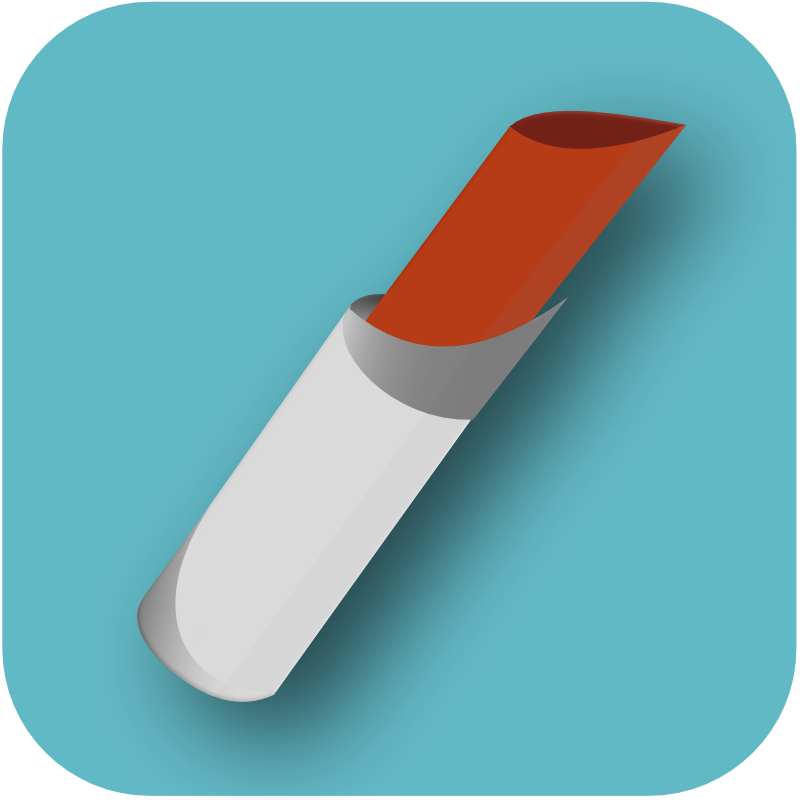
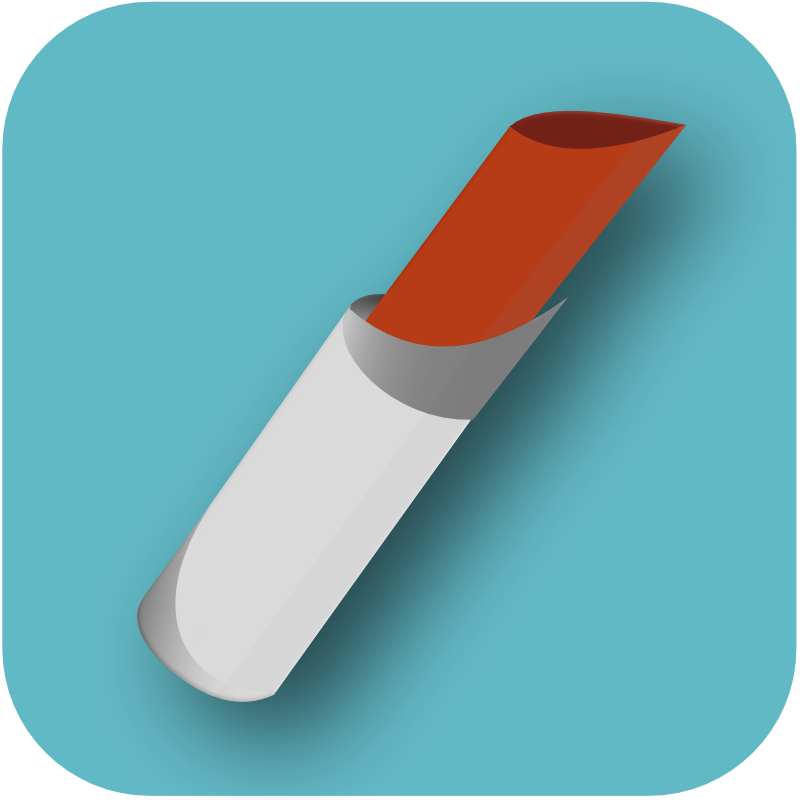

"The only way to engineer the future tomorrow is to have lived in it yesterday" - Bill Buxton
Software should be functional, beautiful, and usable. In today's technology-centric world, it is increasingly important that applications and services are designed to supplement the user's real-world experiences and supply them with a worry-free way to use the products they love.
Icons
Your application's icon is the front door to your product - it is the essence of your service packaged neatly into a beautiful representation of your brand and hints at the experiences your users will quickly learn to love and trust. Bright colors, clean lines, and subtle shadows evoke a sense of fun and simplicity.

 

Designing for the vast varieties of today's devices can be a challenge. Successful products recognize the experiences and ecosystems their customers use and create fluid experiences tailored to their user's needs. I begin with scalable vector formats for my icons and graphics using Affinity Designer or Inkscape, and finalize images and assets using open source image manipulation programs.
Apps
Applications should be intuitive and instinctive. It is vital that each app is respectful of the platform it runs on, presenting the user with an experience that is both delightful and uniquely familiar.
With an educational background in computer science, work experience as a Program and Product Manager, and practice in iconography and visual graphics, I am uniquely positioned as a design architect with the ability to wear many hats. Usability, accessibility, visual design, and branding should be deeply integrated into every aspect of an application or service, beginning with the conceptual product designs all the way up to launch and as part of the evolution of your idea.
I graduated with my Bachelors of Science in Computer Science in May, 2013 from Virginia Tech with a focus in software design and requirements engineering. While at Tech (go Hokies!) I studied programming fundamentals in computer organization, systems-level development, object-oriented programming, language structuring, and specification standards.
Research
In addition to my structured coursework, I developed curricula for Windows 8 Modern development for Microsoft Surface in conjunction with the Virginia Tech Mobile Software Engineering Lab as an undergraduate research project, during which I built applications and wrote their associated tutorials for various Windows 8 apps. In addition to technical research, I also had a chance to work in a cross-disciplinary communications course that aimed to analyze the effects of virtual environments on society by preparing and submitting a research proposal to the Virginia Tech IRB.